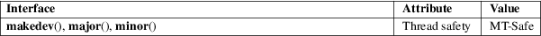

makedev, major, minor − manage a device number
Standard C library (libc, −lc)
#include <sys/sysmacros.h>
dev_t makedev(unsigned int maj, unsigned int min);
unsigned int
major(dev_t dev);
unsigned int minor(dev_t dev);
A device ID consists of two parts: a major ID, identifying the class of the device, and a minor ID, identifying a specific instance of a device in that class. A device ID is represented using the type dev_t.
Given major and minor device IDs, makedev() combines these to produce a device ID, returned as the function result. This device ID can be given to mknod(2), for example.
The major() and minor() functions perform the converse task: given a device ID, they return, respectively, the major and minor components. These macros can be useful to, for example, decompose the device IDs in the structure returned by stat(2).
For an explanation of the terms used in this section, see attributes(7).

The BSDs expose the definitions for these macros via <sys/types.h>.
None.
BSD, HP-UX, Solaris, AIX, Irix.
These interfaces are defined as macros. Since glibc 2.3.3, they have been aliases for three GNU-specific functions: gnu_dev_makedev(), gnu_dev_major(), and gnu_dev_minor(). The latter names are exported, but the traditional names are more portable.
Depending on the version, glibc also exposes definitions for these macros from <sys/types.h> if suitable feature test macros are defined. However, this behavior was deprecated in glibc 2.25, and since glibc 2.28, <sys/types.h> no longer provides these definitions.
mknod(2), stat(2)